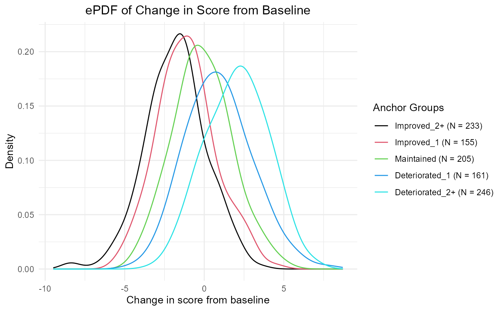
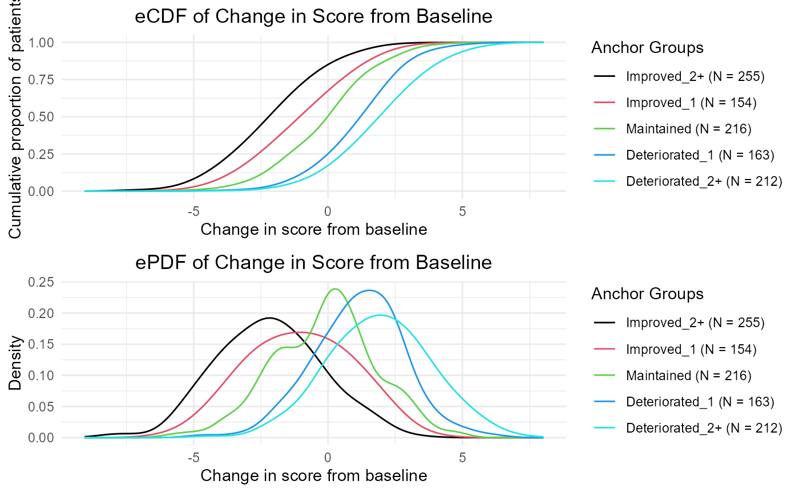
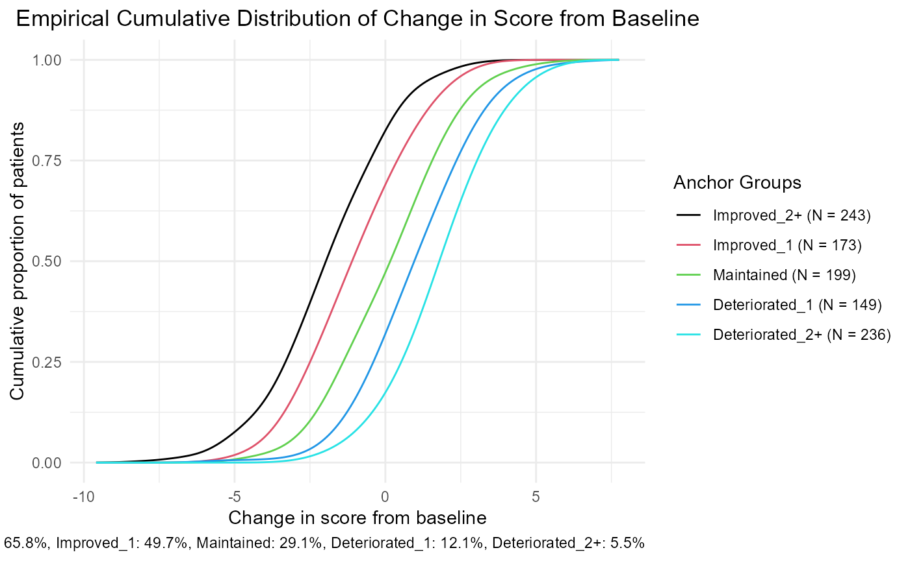
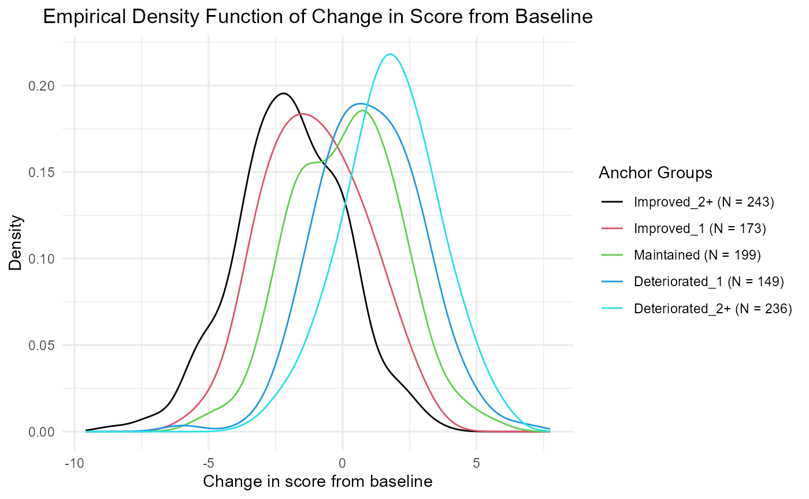

Vignette_eCDF_ePDF.RmdOutput eCDFs and ePDFs in alignment with FDA Guidance 3.
The plots that appear in the html look bad - they are fine when output to a .png file.
sim.out <- COA34::sim_pro_dat(N=1e3,
polychor.value = 0.4,
corr = 'ar1',
cor.value = 0.8,
var.values = c(5))
dat <- sim.out$dat
# You already have the PGIS_bl and PGIS_delta in the generated data,
# you wouldn't have that in a real dataset, so drop that first
dat <- dat[, !(colnames(dat) %in% c('PGIS_bl', 'PGIS_delta'))]
# This makes the resf of this more realistic
dat <- COA34::compute_anchor_delta(dat = dat,
subject.id = 'USUBJID',
time.var = 'Time',
anchor = 'PGIS')
dat <- COA34::compute_change_score(dat = dat,
subject.id = 'USUBJID',
time.var = 'Time',
score = c('Y_comp', 'Y_mcar', 'Y_mar', 'Y_mnar'))
dat <- COA34::compute_anchor_group(dat = dat,
anchor.variable = 'PGIS_delta',
number.of.anchor.groups = 5)
thr <- COA34::compute_thresholds(dat = dat,
anchor.group = 'anchor.groups',
time.var = 'Time',
change.score = 'Y_comp_delta')This function is a little more obscure.
cap <- COA34::compute_prop_surp(dat = dat,
anchor.group = 'anchor.groups',
time.var = 'Time',
change.score = 'Y_comp_delta',
threshold.label = 'Improved_1',
mean.or.median = 'median')Show how to change out the names of the anchor groups, table(dat$anchor.groups). Use the function gsub() or ifelse() statement, using Improved, 2
https://stackoverflow.com/questions/60566227/inserting-math-symbols-in-legends-of-r-plots paste0(“Improved 2”)
This does not show up correctly in R Markdown, but will work in the plots.
table(dat$anchor.groups)
#>
#> Improved_2+ Improved_1 Maintained Deteriorated_1 Deteriorated_2+
#> 660 506 1714 491 629
tmp <- gsub(pattern = 'Improved_2+', replacement = paste0("Improved \u2265 2"), x = dat$anchor.groups )
table(tmp)
#> tmp
#> Deteriorated_1 Deteriorated_2+ Improved = 2+ Improved_1 Maintained
#> 491 629 660 506 1714
#dat$anchor.groups <- gsub(pattern = 'Improved_2+', replacement = paste0("Improved \u2265 2"), x = dat$anchor.groups )
#dat$anchor.groups <- gsub(pattern = 'Deteriorated_2+', replacement = paste0("Deteriorated \u2265 2"), x = dat$anchor.groups )We’re going to do this two ways, first the easy way, with a function that automates it. Then we will go and do it by hand, to give you code to customize.
This way, if the function doesn’t give you exactly what you need, you have something to modify and can quickly get what you need.
This is the most expedient approach. You can use this if you have 200 eCDF/ePDFs to compute. This function automatically prints out a png file with the eCDF/ePDF together.
out <- ggplot2_eCDF(dat = dat,
print.to.png = T,
file.name = 'Example_eCDF_ePDF_ggplot2',
anchor.group = 'anchor.groups',
time.var = 'Time',
change.score = 'Y_comp_delta')
# Note: you can use the paste0 function to use this in a loop
# update anchor_name in the loop
# file.name = paste0('eCDF_ePDF', anchor_name)This also automatically returns you an object with the two ggplot2 plot objects. You can plot them together on the same figure.
out <- ggplot2_eCDF(dat = dat,
print.to.png = F,
anchor.group = 'anchor.groups',
time.var = 'Time',
change.score = 'Y_comp_delta')
plot(out$eCDF)
plot(out$ePDF)
# Plot both:
gridExtra::grid.arrange(out$eCDF, out$ePDF, ncol = 1)
There’s an option to return versions suitable for shell tables:
out <- ggplot2_eCDF(dat = dat,
shell.table = T,
print.to.png = F,
anchor.group = 'anchor.groups',
time.var = 'Time',
change.score = 'Y_comp_delta')
plot(out$eCDF)
# plot(out$ePDF)
# gridExtra::grid.arrange(out$eCDF, out$ePDF, ncol = 1)You may want to create a custom plot. There may be one or two scores that are the focus of your report, and for those, you need to make the plots by hand with several customized modifications. In that case, let’s give you a template to use.
dat.den <- COA34::compute_ecdf(dat = dat,
anchor.group = 'anchor.groups',
time.var = 'Time',
change.score = 'Y_comp_delta')
thr <- COA34::compute_thresholds(dat = dat,
anchor.group = 'anchor.groups',
time.var = 'Time',
change.score = 'Y_comp_delta')
plot.legend <- apply(thr[, c('Anchor Group', 'N')], 1,
function(x) paste0(x[1], ' (N = ', x[2], ')'))
# Shell Tables: plot.legend <- apply(thr[, c('Anchor Group'), drop = F ], 1, function(x) paste0(x, ' (N = xx)'))
library(ggplot2)
library(grid)
library(gridExtra)
# eCDF
p1 <- ggplot2::ggplot(dat.den, aes(x=density_x, y=CDF, group=anchor.groups, color=anchor.groups)) +
geom_line() +
theme_minimal() +
theme(plot.title = element_text(hjust = 0.5)) +
labs( title = 'Empirical Cumulative Distribution of Change in Score from Baseline',
legend.title = 'Anchor Groups',
caption = cap$ecdf.caption,
x = 'Change in score from baseline',
y = 'Cumulative proportion of patients',
color = 'Anchor Groups') +
scale_color_manual(labels = plot.legend,
values = unique(dat.den$anchor.groups))
p1
# ePDF
p2 <- ggplot2::ggplot(dat.den, aes(x=density_x, y=density_y, group=anchor.groups, color=anchor.groups)) +
geom_line() +
theme_minimal() +
theme(plot.title = element_text(hjust = 0.5))+
labs( title = 'Empirical Density Function of Change in Score from Baseline',
x = 'Change in score from baseline',
y = 'Density',
color = 'Anchor Groups') +
scale_color_manual(labels = plot.legend,
values = unique(dat.den$anchor.groups))
p2
You can customize this code to yield what you want. Google is your friend here.